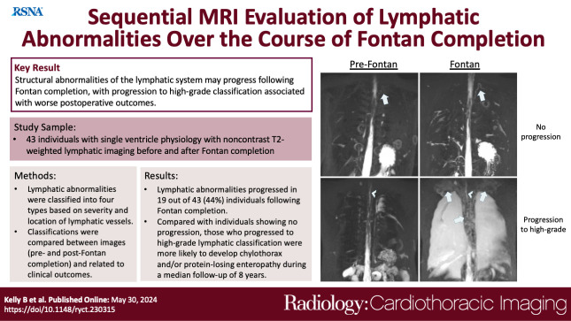
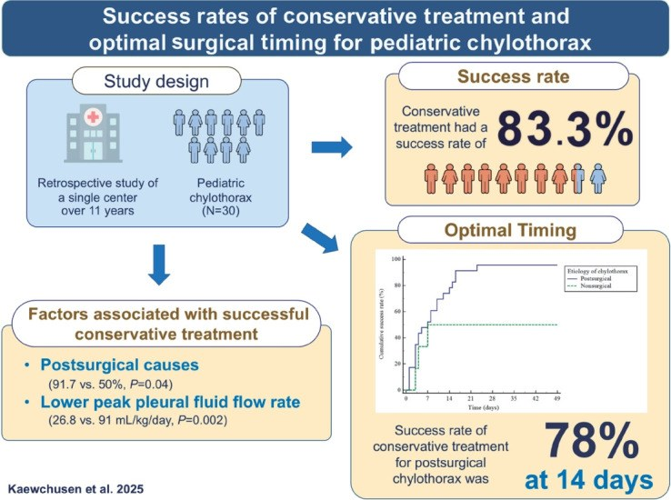
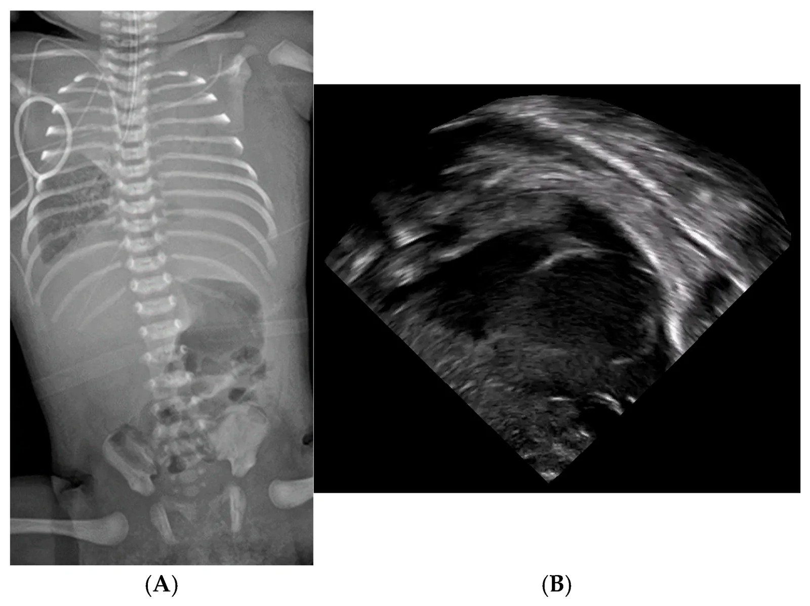
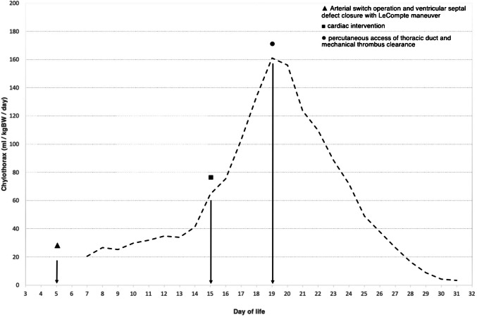
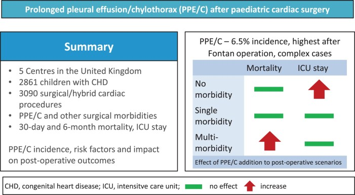

6161 — Tràn dưỡng trấp màng phổi sau mổ tim bẩm sinh (Fontan/Glenn): vì sao áp lực tĩnh mạch hệ thống quyết định / Postoperative chylothorax after congenital heart surgery
Tags: pattern:chylothorax pattern:tran-dich-mang-phoi pattern:ro-bach-mach vung:mong-phoi vung:trung-that vung:ong-nguc protocol:X-quang-nguc protocol:sieu-am-phoi protocol:MRI-T2-bach-huyet score:TG-dich score:luu-luong-mL-kg
Mức chắc chắn (certainty): tổng hợp y văn (literature synthesis) — biên từ 9.892 ca mổ tim bẩm sinh theo dõi 2001–2024 (JTCVS Open 2026, PMC13711289), đoàn hệ 5 trung tâm Anh, 2.861 trẻ / 3.090 thủ thuật (PMC11522863), 176 nhũ nhi Trung Quốc (PMC10929254), 1.053 ca Thổ Nhĩ Kỳ (PMC10472469), nghiên cứu 30 ca nhi về thời điểm mổ (PMC12590056), protocol Severance (PMC7155178), tổng quan Nutrients 2022 (PMC9104302), 43 bệnh nhân MRI bạch huyết trước–sau Fontan (Radiology: Cardiothoracic Imaging 2024, PMC11211943), ca sơ sinh 3 kg nút ống ngực qua da (PMC12708693) và ca người lớn có tắc tĩnh mạch chủ trên gây chylothorax (PMC8311179). Nhóm không có bệnh nhân của mình.
Câu chốt: sau mổ tim bẩm sinh, tràn dưỡng trấp không phải một biến chứng "rò ống ngực" đơn thuần mà là bệnh của gradient áp lực bạch huyết–tĩnh mạch: ống ngực đổ vào ngã ba tĩnh mạch cảnh trong–dưới đòn, nên áp lực tĩnh mạch trung tâm (CVP) là "áp lực đối kháng" của dòng dưỡng trấp. Ở tuần hoàn Fontan, CVP cao là điều kiện sống còn — và cũng chính là nguyên nhân gây rò. Vì vậy hạ CVP bằng mở cửa sổ (fenestration) hoặc giải ép ống ngực là điều trị gốc, không chỉ là "cho ăn ít mỡ".
1. Tổng quan bệnh học – cơ chế hình ảnh (TẠI SAO)
1.1 Sinh lý bệnh: dòng bạch huyết là dòng chảy theo gradient
- Bạch huyết từ ống ngực (thoracic duct) đổ vào ngã ba tĩnh mạch cảnh trong trái – tĩnh mạch dưới đòn trái, tức là đổ trực tiếp vào hệ tĩnh mạch hệ thống. Lưu lượng theo Q = ΔP / R, với ΔP = áp lực mô kẽ − áp lực tĩnh mạch trung tâm.
- Hệ quả 1 — CVP tăng thì Q giảm rồi ứ: khi CVP tăng, ΔP giảm → bạch huyết ứ ở mô kẽ, giãn mạch bạch huyết (lymphangiectasia), thành mạch mỏng đi và rò dịch dưỡng trấp vào khoang màng phổi. Đây là cơ chế không do dao kéo — giải thích vì sao tràn dưỡng trấp xuất hiện muộn, kéo dài, hai bên ở bệnh nhân Fontan chứ không chỉ ngay sau mổ.
- Hệ quả 2 — sau Fontan, CVP cao là bắt buộc: không còn thất phải làm bơm, máu lên phổi chỉ nhờ chênh áp tĩnh mạch hệ thống – nhĩ trái. Vì thế giảm CVP = giảm lưu lượng phổi, còn giữ CVP cao = tăng rò bạch huyết. Đây là mâu thuẫn điều trị cốt lõi của bài này.
- Hệ quả 3 — tổn thương trực tiếp: bóc tách quanh tĩnh mạch chủ trên, tĩnh mạch azygos, rốn phổi trong thì Glenn/Fontan cắt ngang các nhánh bạch huyết trung thất; đây là cơ chế sớm, một bên điển hình sau các phẫu thuật mở ngực khác.
- TẠI SAO lại là màng phổi mà không phải màng tim: bạch huyết của màng phổi thành đổ về ống ngực và các thân bạch huyết trung thất; khi ứ, dịch thoát vào khoang màng phổi — nơi có áp lực âm trong thì thở vào, tạo "van hút" làm dịch tích nhanh. Tràn dưỡng trấp màng tim là thể riêng, ít gặp hơn (bài 6157).
- TẠI SAO tràn dịch kéo dài lại nguy hiểm: mất dịch, protein, immunoglobulin, lympho bào → suy dinh dưỡng, giảm miễn dịch, giảm thể tích, kéo dài thở máy và nằm hồi sức. Trong đoàn hệ 5 trung tâm Anh, tràn dịch/ dưỡng trấp kéo dài cộng thêm vào các biến chứng khác làm tăng tử vong 30 ngày và 6 tháng và tăng thời gian hồi sức (PMC11522863).
1.2 Vật lý hình ảnh: vì sao dịch "dưỡng trấp" có thể trong như dịch thấm
- Dịch dưỡng trấp đục là do tán xạ ánh sáng của chylomicron (hạt ≈ 0,1–1 µm, đường kính lớn hơn bước sóng ánh sáng khả kiến). Không có chylomicron = không đục, dù dịch vẫn là bạch huyết.
- Vì vậy bệnh nhân đang đói/nuôi tĩnh mạch hoàn toàn có thể có dịch vàng trong — màu sữa không phải tiêu chuẩn chẩn đoán (độ nhạy thấp). Ngược lại, dịch đục cũng gặp trong empyema (tế bào mủ) và pseudochylothorax (tinh thể cholesterol, không có chylomicron).
- Tiêu chuẩn dịch trên lâm sàng (theo tổng quan Nutrients 2022): bạch cầu > 1.000 tế bào/µL với > 70–80% lympho bào, và ở bệnh nhân đang ăn đường tiêu hóa, triglyceride dịch > 110 mg/dL; TG dịch > TG huyết thanh là dấu phụ rất đặc hiệu. Ở trẻ sơ sinh, dịch thường không đục vì bữa ăn còn ít mỡ.
- Trên X-quang và siêu âm, tràn dưỡng trấp không có dấu hiệu riêng: chỉ là tràn dịch tự do (mờ đáy phổi, xóa góc sườn hoành, dấu liềm; siêu âm: khoảng trống không hồi âm, phổi xẹp đẩy lên). Chẩn đoán luôn cần chọc hút + xét nghiệm dịch; hình ảnh chỉ trả lời "có bao nhiêu dịch, có chèn ép, có ổ khu trú".
- MRI T2 không cản quang (lymphatic MRI) mới là phương thức thấy chính bạch huyết: dịch bạch huyết tăng tín hiệu mạnh trên T2 nên các ống bạch huyết giãn, mạng bạch huyết sau phúc mạc và trung thất hiện thành các cấu trúc sáng như nước, cho phép phân độ 1–4 theo mức lan và vị trí (PMC11211943).
1.3 Dịch tễ và ngưỡng định lượng (số phải nhớ)
- Tần suất chung sau mổ tim bẩm sinh: 3,2% (312/9.892) ca mổ trong 24 năm; Fontan là phẫu thuật nguy cơ cao nhất (HR 16,198 so với mổ đơn giản), chiếm 20,5% tổng số ca tràn dưỡng trấp; tuổi mổ càng nhỏ nguy cơ càng cao (HR 0,745 mỗi năm tuổi tăng thêm) (PMC13711289).
- Đoàn hệ 5 trung tâm Anh: 6,5% trong 2.861 trẻ / 3.090 thủ thuật, cao nhất sau Fontan và các ca phức tạp; khi có nhiều biến chứng đồng thời thì tràn dịch kéo dài làm tăng tử vong 30 ngày và 6 tháng (PMC11522863).
- Nhũ nhi: 2,02% (dao động 1,55–3,17%/năm); sinh non OR 5,783, thở máy trước mổ OR 1,053, albumin sau mổ thấp OR 0,095 (PMC10929254). Ở 1.053 ca Thổ Nhĩ Kỳ: 7,4%, liên quan tuổi nhỏ, nhiễm trùng, lọc màng bụng (PMC10472469).
- Fontan và bạch huyết: trong 43 bệnh nhân chụp MRI T2 trước và sau Fontan, 19/43 (44%) tiến triển sang mức nặng hơn (phân bố type 1–4 trước Fontan 23/11/6/3 → sau Fontan 10/18/10/5, p = 0,04); nhóm tiến triển có dẫn lưu màng phổi 17 ngày (IQR 10–23) vs 9 ngày (6–14) và nằm viện 26 ngày (18–30) vs 13 ngày (9–25) (PMC11211943).
- Ngưỡng lưu lượng (định nghĩa không thống nhất — ghi rõ mâu thuẫn nguồn): có tác giả coi > 10 mL/kg/ngày là thể tích cao, nhóm khác dùng > 20 mL/kg/ngày; một số dùng > 5 mL/kg/ngày cho trẻ nhỏ. Chỉ định can thiệp được đề xuất khi > 100 mL/kg/ngày kéo dài 5 ngày, hoặc 100 mL/ngày liên tục > 2 tuần, hoặc không giảm sau 1–2 tuần điều trị nội khoa (PMC9104302).
- Kết quả điều trị nội khoa: 83,3% (25/30) thành công chung và 95% (19/20) ở nhóm sau mổ tim; lưu lượng đỉnh 26,8 mL/kg/ngày ở nhóm thành công so với 91 mL/kg/ngày ở nhóm thất bại (p = 0,002); đường cong sống còn cho thấy 78% thành công ở ngày thứ 14 — mốc 2 tuần là thời điểm hợp lý để chuyển can thiệp (PMC12590056).
- Protocol Severance: sau khi áp dụng protocol, 61% chỉ cần ăn ít mỡ, 28% phải ngừng hoàn toàn đường tiêu hóa; không ca nào cần buộc ống ngực hay gây dính màng phổi; số ngày dẫn lưu trung vị 24 → 14 ngày (PMC7155178).
2. Mẫu hình + chẩn đoán phân biệt theo vị trí và cơ chế (Gamut)
- Nhóm A — rò tại ngã ba bạch huyết–tĩnh mạch (trung tâm): sau Fontan/Glenn, hoặc do huyết khối ống thông tĩnh mạch trung tâm làm tắc tĩnh mạch chủ trên/dưới đòn. Hình ảnh: tràn dịch một hoặc hai bên, tái phát nhanh sau khi rút ống; kèm phù mặt, tuần hoàn bàng hệ thành ngực, huyết khối trên siêu âm Doppler. Đây là thể chữa được bằng giải ép tĩnh mạch (nong/hút huyết khối, mở cửa sổ Fontan).
- Nhóm B — tổn thương trực tiếp ống ngực/nhánh trung thất: sau bóc tách trung thất, mổ cầu nối chủ–phổi, sửa van, cắt tuyến ức. Dịch xuất hiện sớm 2–10 ngày, thường một bên trái (ống ngực), lưu lượng lớn, đáp ứng tốt với dinh dưỡng + nút ống ngực.
- Nhóm C — dưỡng trấp từ ổ bụng lên (qua cơ hoành): bệnh nhân Fontan có bệnh lý ruột mất protein (PLE) và cổ trướng dưỡng trấp; tràn dịch màng phổi thường phải (đường bạch huyết gan), kèm albumin máu thấp, phù, tiêu chảy. Đây là dấu hiệu thất bại tuần hoàn Fontan, tiên lượng xấu.
- Nhóm D — không phải dưỡng trấp (bắt buộc loại trừ):
- Dịch thấm do suy tuần hoàn Fontan (CVP cao, tim cung lượng thấp): dịch trong, TG thấp, protein thấp, hai bên, kèm gan to, tĩnh mạch cổ nổi.
- Máu (hemothorax): sau mổ, Hct dịch ≈ máu, đông máu, tụt huyết sắc tố.
- Empyema: sốt, dịch đục, pH < 7,2, glucose thấp, LDH cao, Gram/cấy dương.
- Dịch do thở máy/ứ dịch: cải thiện khi giảm PEEP, thường hai bên.
- Gợi nhớ khi đứng trước "tràn dịch sau Fontan" — 4 câu hỏi: (1) CVP bao nhiêu? (2) Dịch có TG > 110 mg/dL không? (3) Một bên hay hai bên? (4) Có albumin thấp/phù (PLE) không? Trả lời 4 câu này định vị được nhóm A–D.
3. Bảng so sánh phân biệt (ma trận đối chiếu)
| Thực thể (entity) | Hình ảnh điển hình | Chốt vào (rule-in) | Chốt loại (rule-out) | Gợi ý xác nhận |
|---|---|---|---|---|
| Rò ống ngực sau mổ tim (nhóm B) | Tràn dịch một bên trái, xuất hiện 2–10 ngày sau mổ, lưu lượng tăng khi ăn mỡ | TG dịch > 110 mg/dL + lympho > 70–80% + lưu lượng tăng sau bữa ăn | Dịch trong, TG thấp, không tăng theo bữa ăn → nghĩ dịch thấm | Xét nghiệm dịch, theo dõi lưu lượng theo mL/kg/ngày |
| Rò do CVP cao sau Fontan (nhóm A) | Tràn dịch hai bên/kéo dài, tái phát sau rút ống, kèm phù mặt, bàng hệ | CVP cao + tràn dịch tái phát + MRI T2 thấy bạch huyết giãn độ 3–4 | CVP bình thường, ổ khu trú một bên, đáp ứng nhanh với MCT → nghĩ nhóm B | Doppler tĩnh mạch trung tâm, MRI bạch huyết T2, đo CVP |
| Suy tuần hoàn Fontan (dịch thấm) | Hai bên, tim to, gan to, tĩnh mạch cổ nổi, có thể cổ trướng | Dịch trong, protein thấp, TG thấp, BNP cao, CVP cao | TG cao + lympho ưu thế → là dưỡng trấp | Siêu âm tim, BNP, xét nghiệm dịch |
| Máu màng phổi sau mổ | Mờ đáy phổi, có thể mức ngang, thiếu máu | Hct dịch gần Hct máu, đông thành cục | Dịch không đông, Hct thấp → không phải máu | Hct dịch, Hb/Hct máu, siêu âm |
| Empyma sau mổ | Dịch khu trú, vách, dày màng phổi, sốt | pH < 7,2, glucose thấp, LDH cao, cấy dương | Dịch vô khuẩn, pH > 7,3, không vách → không empyema | Cấy + tế bào + sinh hóa dịch |
| Cổ trướng dưỡng trấp thoát lên (nhóm C) | Tràn dịch phải, kèm cổ trướng, phù, albumin thấp | Cổ trướng + albumin < 3 g/dL + MRI thấy bạch huyết sau phúc mạc giãn | Không có cổ trướng, albumin bình thường → không phải PLE | Albumin, phân tích dịch bụng, MRI bạch huyết |

Hình đồ họa của bài Radiology: Cardiothoracic Imaging 2024 (PMC11211943, CC BY 4.0): 43 bệnh nhân một thất được chụp MRI T2 không cản quang trước và sau Fontan; 19/43 tiến triển sang phân độ nặng hơn, và nhóm tiến triển có dẫn lưu 17 vs 9 ngày, nằm viện 26 vs 13 ngày. Ảnh nguyên bản, không cắt ghép.Dấu hiệu cần đọc đúng trên từng phương thức
- X-quang ngực: đếm số cung sườn và mức mờ để ước lượng thể tích; lệch trung thất cho biết có chèn ép. Ở trẻ sơ sinh, phim nằm ngửa, pha thở ra làm mờ giả tăng — luôn so với phim trước.
- Siêu âm phổi đầu giường: khoảng không hồi âm giữa thành ngực và màng phổi; phổi xẹp đập theo nhịp tim trong dịch; có thể đo thể tích ước tính và hướng dẫn chọc. Đây là công cụ không bức xạ để theo dõi hằng ngày ở trẻ sơ sinh.
- MRI bạch huyết T2: đánh giá phân độ 1–4 và sự tiến triển sau Fontan; giá trị lớn nhất là tiên lượng (nguy cơ tràn dịch kéo dài, PLE) và chọn bệnh nhân cho can thiệp bạch huyết.
- DCMRL (dynamic contrast-enhanced MR lymphangiography): xác định điểm rò và đường dẫn lưu bất thường trước khi nút ống ngực — dùng khi can thiệp đã được quyết định (xem bài 6158, 1822).
4. Protocol chụp + hệ phân độ + thuật toán xử trí
4.1 Chẩn đoán
- Bước 1 — X-quang ngực thẳng khi nghi tràn dịch (khó thở, giảm thông khí một bên, tăng nhu cầu oxy).
- Bước 2 — siêu âm phổi đầu giường để định lượng và hướng dẫn chọc; không cần CT thường quy.
- Bước 3 — chọc hút chẩn đoán (nếu an toàn): gửi tế bào, protein, albumin, LDH, glucose, pH, TG, cấy, AFB nếu cần.
- Bước 4 — chỉ CT ngực có cản quang khi nghi ổ khu trú, empyema, huyết khối tĩnh mạch trung tâm, hoặc biến chứng phẫu thuật.
- Bước 5 — MRI bạch huyết T2 (± DCMRL) khi tràn dịch kéo dài/tái phát và đang cân nhắc can thiệp bạch huyết.
4.2 Phân tầng theo lưu lượng và thời gian
- Đặt dẫn lưu kín, áp lực thấp, ghi mL/kg/ngày mỗi 24 giờ (đây là biến số quyết định, không phải số mL tuyệt đối).
- Bắt đầu ngay chế độ ít mỡ: MCT hoặc sữa mẹ đã tách béo, mỡ < 10 g/ngày, bổ sung 3 g/kg/tuần lipid và vitamin tan mỡ; đánh giá lại sau 24–36 giờ (PMC9104302).
- Nếu lưu lượng cao: ngừng ăn + nuôi tĩnh mạch hoàn toàn, cân nhắc octreotide (đồng thuận, liều khác nhau giữa trung tâm — ghi rõ là kinh nghiệm, không có thử nghiệm ngẫu nhiên ở trẻ).
- Mốc 14 ngày: nếu không giảm hoặc > 10 mL/kg/ngày sau 1 tuần, hoặc > 100 mL/kg/ngày kéo dài 5 ngày → can thiệp. Dữ liệu 30 ca nhi cho thấy 78% thành công ở ngày 14, nên chờ quá 2 tuần là chờ vô ích ở nhóm sau mổ (PMC12590056).

*Hình đồ họa Clinical and Experimental Pediatrics 2025 (PMC12590056, CC BY-NC 4.0): điều trị nội khoa thành công 83,3% (25/30), 95% (19/20) ở nhóm sau mổ tim; lưu lượng đỉnh 26,8 vs 91 mL/kg/ngày giữa nhóm thành công và thất bại; 78% thành công ở ngày thứ 14 — cơ sở cho mốc chuyển can thiệp.*- Can thiệp theo thứ tự: (1) nút ống ngực qua da (TDE) bằng coil + NBCA — thành công kỹ thuật cao, kể cả ở trẻ Fontan (PMC10647881); (2) mở cửa sổ Fontan nếu rò do CVP cao; (3) phẫu thuật: buộc ống ngực, nối bạch huyết–tĩnh mạch (LVA), gây dính màng phổi.
- Duy trì chế độ ít mỡ 6 tuần sau khi hết dịch rồi giảm dần; rút ống khi lưu lượng thấp và ổn định (PMC9104302).
flowchart TD
A[Tràn dịch màng phổi sau mổ tim bẩm sinh] --> B[Chọc dịch: TG, lympho, protein, cấy]
B --> C{TG dich tren 110 mg/dL va lympho uu the}
C -->|Khong| D[Dich tham do suy tuan hoan, mau, empyema]
C -->|Co| E[Chan doan tran duong trap]
E --> F[Che do it mo MCT 24 den 36 gio]
F --> G{Luu luong mL tren kg tren ngay}
G -->|Thap| H[Tiep tuc MCT, danh gia moi 48 gio]
G -->|Cao| I[Ngung an, nuoi tinh mach, octreotide]
H --> J{Con dich sau 14 ngay}
I --> J
J -->|Khong| K[Giam dan che do, duy tri 6 tuan roi rut ong]
J -->|Co| L[Nut ong nguc qua da hoac mo cua so Fontan]
L --> M{Con ro}
M -->|Co| N[Phau thuat: buoc ong nguc, LVA, gay dinh mang phoi]
M -->|Khong| K
4.3 Theo dõi trong hồi sức
- Cân nặng hằng ngày, albumin, điện giải, lympho bào máu, immunoglobulin — mất dịch dưỡng trấp gây giảm IgG và nhiễm trùng; đây là lý do không được "chỉ theo dõi lưu lượng".
- Siêu âm tim đánh giá chức năng Fontan, hẹp đường dẫn lưu, cửa sổ; Doppler tĩnh mạch trung tâm nếu nghi huyết khối (nhóm A).
- Đo lưu lượng theo mL/kg/ngày và ghi vào bảng — mọi quyết định can thiệp dựa trên xu hướng 3–5 ngày, không dựa một lần đo.
5. Biến thể bình thường và cạm bẫy
- Cạm bẫy 1 — "dịch trong nên không phải dưỡng trấp": bệnh nhân đói hoặc nuôi tĩnh mạch có dịch vàng trong dù TG vẫn cao. Luôn gửi TG dù màu dịch thế nào; nếu nghi ngờ, cho bữa ăn có mỡ rồi đo lại.
- Cạm bẫy 2 — "tràn dịch sau Fontan luôn là dưỡng trấp": sai. Suy tuần hoàn Fontan cho dịch thấm (protein thấp, TG thấp). Điều trị khác hoàn toàn (tối ưu cung lượng, giảm CVP), và tăng dinh dưỡng đơn thuần sẽ thất bại.
- Cạm bẫy 3 — bỏ sót huyết khối tĩnh mạch trung tâm: trẻ có ống thông tĩnh mạch trung tâm lâu ngày bị chylothorax do tắc tĩnh mạch chủ trên, không do rò ống ngực; nút ống ngực sẽ vô ích nếu không giải ép tĩnh mạch. Ca người lớn tương tự đã được báo (PMC8311179).
- Cạm bẫy 4 — tăng "dẫn lưu mạnh" để "cho phổi nở": hút áp lực cao làm tăng lưu lượng rò, mất protein và lympho nhanh hơn; dùng dẫn lưu kín áp lực thấp, chỉ hút khi cần thiết.
- Cạm bẫy 5 — nhầm với viêm phế quản nhựa (plastic bronchitis): cũng là biến chứng bạch huyết của Fontan, nhưng biểu hiện là bã nhầy hình cành cây gây xẹp phổi, không phải tràn dịch; điều trị cũng là can thiệp bạch huyết.
- Biến thể bình thường: dịch màng phổi lượng nhỏ sau mổ tim (vài mm, mất trong 48–72 giờ) là phản ứng lành tính; không chọc nếu trẻ ổn định, không tăng oxy, không lệch trung thất.
6. Tự lượng giá — Blind Quiz
Ca 1 — Sơ sinh 3,2 kg, ngày thứ 8 sau mổ chuyển gốc động mạch + đóng thông liên thất, khó thở tăng, oxy tụt.

- Hỏi: mô tả 2 hình (A) và (B). Dịch nằm ở đâu, có chèn ép gì? 3 chẩn đoán phân biệt? Xét nghiệm nào chốt chẩn đoán?
Bấm để hiện đáp án
- (A) X-quang: mờ toàn bộ nửa lồng ngực trái, đẩy trung thất sang phải, phổi trái còn lại bị ép — tràn dịch lượng lớn. (B) Siêu âm: khoảng không hồi âm lớn dưới màng phổi, phổi xẹp đập theo nhịp tim trong dịch.
- Phân biệt: tràn dưỡng trấp sau mổ (thể tổn thương trực tiếp), dịch thấm do suy tuần hoàn, empyema, máu màng phổi.
- Chốt: chọc hút + TG dịch > 110 mg/dL, lympho > 70–80%, bạch cầu > 1.000/µL → dưỡng trấp. Nếu dịch trong vẫn phải gửi TG (bệnh nhân đang đói).
- Nguồn ảnh: Children 2026 (PMC13703455, CC BY 4.0), ca tràn dưỡng trấp sau mổ tim ở sơ sinh.
Ca 2 — Sơ sinh 3 kg sau mổ tim, lưu lượng dẫn lưu tăng dần và đạt đỉnh 170 mL/kg/ngày.

- Hỏi: con số 170 mL/kg/ngày nói gì? Vì sao không thể chờ thêm? Cơ chế nào giải thích đỉnh này?
Bấm để hiện đáp án
- 170 mL/kg/ngày vượt xa ngưỡng 100 mL/kg/ngày — thuộc nhóm lưu lượng rất cao, nguy cơ mất dịch, protein, lympho, không thể điều trị nội khoa đơn thuần.
- Ca này có huyết khối tại ngã ba ống ngực–tĩnh mạch và tắc tĩnh mạch cánh tay đầu/chủ trên; sau khi hút huyết khối + nong và tiếp cận ống ngực qua da, lưu lượng giảm nhanh trong 10 ngày.
- Bài học: tăng CVP do tắc tĩnh mạch = tăng ΔP ngược chiều = tăng rò; phải giải ép tĩnh mạch, không chỉ ăn ít mỡ.
- Nguồn ảnh: Pediatric Radiology 2025 (PMC12708693, CC BY 4.0).
Ca 3 — Trẻ một thất, MRI T2 bạch huyết trước Fontan là độ 2; 6 tháng sau Fontan chụp lại.
- Hỏi: hình bên phải khác bên trái ở đâu? Sự khác biệt này dự báo gì? Nó thay đổi kế hoạch điều trị thế nào?
Bấm để hiện đáp án
- Bên phải (sau Fontan): các ống bạch huyết giãn rõ hơn, lan rộng hơn — tiến triển phân độ. Trong đoàn hệ 43 bệnh nhân, 19/43 tiến triển, và nhóm tiến triển có dẫn lưu 17 vs 9 ngày, nằm viện 26 vs 13 ngày.
- Dự báo: nguy cơ tràn dịch kéo dài, PLE, thất bại Fontan → cần theo dõi sát, chuẩn bị can thiệp bạch huyết sớm, và cân nhắc cửa sổ Fontan.
- Nguyên tắc: hình ảnh bạch huyết cho biết "đường ống" — lưu lượng và CVP cho biết "áp lực"; quyết định can thiệp cần cả hai.
- Nguồn ảnh: PMC11211943, CC BY 4.0.
Ca 4 — Trẻ Fontan có tràn dịch hai bên, albumin 2,4 g/dL, phù, tiêu chảy.

- Hỏi: đây là nhóm nào trong 4 nhóm (A–D)? Vì sao "cho ăn ít mỡ" đơn thuần sẽ thất bại? Cần đánh giá gì trước khi can thiệp?
Bấm để hiện đáp án
- Đây là nhóm C — dưỡng trấp từ ổ bụng (PLE), dấu hiệu thất bại tuần hoàn Fontan, không phải rò ống ngực đơn thuần.
- Ăn ít mỡ chỉ giảm nguồn chylomicron, không giải quyết CVP cao và thất thoát protein qua ruột → phải đánh giá huyết động Fontan (siêu âm tim, catheter, cửa sổ), albumin, IgG, và cân nhắc can thiệp bạch huyết/ghép tim.
- Ảnh: PMC11522863 (CC BY 4.0) — tràn dịch/dưỡng trấp kéo dài làm tăng tử vong khi có nhiều biến chứng đồng thời.
Bài liên quan chéo
- 1839 – Chylothorax sau cắt gan/ghép gan — ngưỡng TG, bilothorax
- 6157 – Tràn dưỡng trấp màng tim ở trẻ — thể màng tim
- 1855 – LVA chuyển hướng dòng ống ngực — phẫu thuật bạch huyết
- 6158 – PLE bạch huyết ở trẻ — bệnh ruột mất protein
- 6101 – Xẹp phổi tái diễn ở trẻ BPD — chẩn đoán phân biệt mờ phổi
- 040 – Tràn dịch màng phổi — tiếp cận tràn dịch nói chung
Ảnh
- Nguồn và giấy phép từng ảnh:
images/CREDITS.md. Ảnh nguyên bản, không cắt ghép (một ảnh CC BY-NC chỉ dùng nguyên bản).
Không dùng để chẩn đoán độc lập khi chưa có người hướng dẫn.